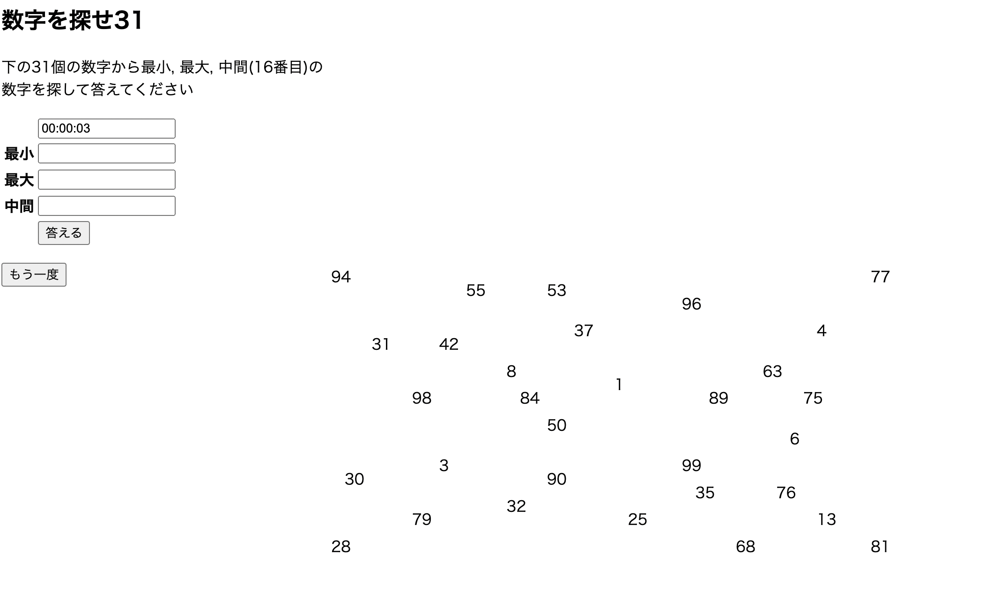

数字探しゲーム
【内容】
1〜100の中からランダムに選ばれた31個の数字から
最小、最大、中間(16番目)を探し出すゲーム。
優劣をつけることができる仕様にしたかったため、開始してからの時間を記録。
最小最大だけだと(1と100)が出たら簡単になり、
10番台から80番台あたりも正直意味がなくなってしまうため中間も求める仕様に。

【構成】
Mathのrandomメソッドを用いて1〜100のランダムな数値を生成
↓
ArrayListのcontainsメソッドを用いて
結果がfalse(数字の被りがない)なら数値を格納するArrayListに格納
↓
最小,最大,中間が知りたいため、
31の数値を格納した配列をバブルソートを用いて昇順に並び替える
【工夫や学び】
最初はfor文を使ってArrayListから1つずつ値を抜き出し、
生成した数値と重複するか確かめるコードを記述しました。
しかし都度for文を用いるのは無駄が多いと感じ調べたところ、
containsメソッドを学びこちらに変更しました。
答え合わせの際にservletに数値を投げると、
servletが機能して表示されている数値が一新されてしまいました。
それを打破するためにJavaScriptを取り入れてページ遷移なしで答え合わせができるようにしました。
経過時間表示についてもJavaScriptで作成しています。